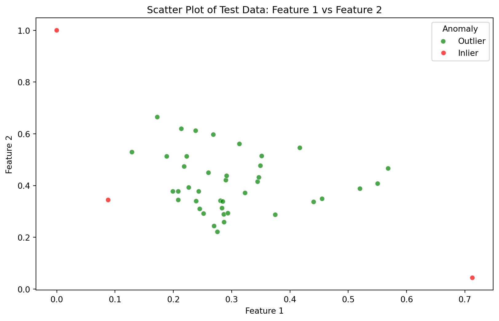

Anomaly or outlier detection in machine learning refers to the identification of rare items, events, or observations which raise suspicions by differing significantly from the majority of the data. Typically, these anomalies represent issues such as errors, frauds, faults, or significant deviations from the norm. In the context of machine learning, anomaly detection is applied across various domains like fraud detection in banking, intrusion detection in network security, fault detection in manufacturing, and medical diagnosis.
The process involves training a model to identify the patterns of normal data and subsequently detect data points that deviate from this normal pattern.
Step 1: Importing the Dataset
The Glass Identification Dataset is a dataset containing information about different types of glass. We can import it from the ODDS platform using the pandas library.
Code
import scipy.ioimport pandas as pd# Load the .mat filemat_file_path ='glass.mat'# Replace with the actual pathmat_data = scipy.io.loadmat(mat_file_path)# Extract 'X' and 'y' from the .mat fileX = mat_data['X']y = mat_data['y']# Displaying the first few rows of 'X' and 'y' for step 1pd.DataFrame(X, columns=[f"Feature_{i+1}"for i inrange(X.shape[1])]).head(), pd.DataFrame(y, columns=['Target']).head()
In this step, we handle missing values and prepare the data for the model. This may include filling missing values, encoding categorical variables, and scaling features.
Code
from sklearn.preprocessing import MinMaxScaler# Convert 'X' and 'y' into pandas DataFramesdf_X = pd.DataFrame(X)df_y = pd.DataFrame(y)# Check for missing valuesmissing_values = df_X.isnull().sum().sum() + df_y.isnull().sum().sum()# Normalize the feature datascaler = MinMaxScaler()df_X_scaled = scaler.fit_transform(df_X)
Step 3: Splitting the Test and Train Sets
We divide the dataset into training and testing sets.
Code
from sklearn.model_selection import train_test_split# Split the dataset into training and test setsX_train, X_test, y_train, y_test = train_test_split(df_X_scaled, df_y, test_size=0.2, random_state=42)
Step 4: Fitting the Model to the Training Set
We use the Isolation Forest model for anomaly detection. The Isolation Forest method is a popular algorithm used for anomaly detection. The Isolation Forest isolates observations by randomly selecting a feature and then randomly selecting a split value between the maximum and minimum values of the selected feature.
Code
from sklearn.ensemble import IsolationForest# Fit the Isolation Forest model to the training setiso_forest = IsolationForest(contamination=0.1, random_state=42)iso_forest.fit(X_train)
In a Jupyter environment, please rerun this cell to show the HTML representation or trust the notebook. On GitHub, the HTML representation is unable to render, please try loading this page with nbviewer.org.
Now that our model is trained, we can use it to predict anomalies in the test set.
Code
# Predict anomalies in the test setpredictions = iso_forest.predict(X_test)# Add predictions to the test set for visualizationX_test_with_predictions = pd.DataFrame(X_test).copy()X_test_with_predictions['Anomaly'] = predictions
Step 6: Visualizing the Test Results
To visualize the results of our anomaly detection model, we can create a scatter plot to show the anomalies in the test data.
Code
import matplotlib.pyplot as pltimport seaborn as sns# Selecting two features for the scatter plotfeature_1_index =0# First featurefeature_2_index =1# Second feature# Create the scatter plotplt.figure(figsize=(10, 6))sns.scatterplot(x=X_test_with_predictions.iloc[:, feature_1_index], y=X_test_with_predictions.iloc[:, feature_2_index], hue=X_test_with_predictions['Anomaly'], palette=['red', 'green'], alpha=0.7)plt.title('Scatter Plot of Test Data: Feature 1 vs Feature 2')plt.xlabel('Feature 1')plt.ylabel('Feature 2')plt.legend(title='Anomaly', labels=['Outlier', 'Inlier'])plt.show()

Testing the accuracy
Code
from sklearn.metrics import accuracy_score# Converting the anomaly predictions from [-1, 1] to [0, 1], where -1 (anomaly) becomes 1 and 1 (normal) becomes 0# This is to align with the target variable's encoding where we assume 1 represents anomaly and 0 represents normalpredicted_labels = (predictions ==-1).astype(int)# Calculating the accuracyaccuracy = accuracy_score(y_test, predicted_labels)accuracy
0.9069767441860465
Source Code
---title: "Anomaly/outlier detection"author: "Adithya Harish"image: "anomaly.png"---<tablealign="left"><td><ahref="https://colab.research.google.com/drive/1DmLUWuX_N5lznzTXl9mMhLhYBKyquFi7?usp=sharing"target="_parent"><imgsrc="https://colab.research.google.com/assets/colab-badge.svg"alt="Open In Colab"/></a></td></table># Anomaly/outlier detectionAnomaly or outlier detection in machine learning refers to the identification of rare items, events, or observations which raise suspicions by differing significantly from the majority of the data. Typically, these anomalies represent issues such as errors, frauds, faults, or significant deviations from the norm. In the context of machine learning, anomaly detection is applied across various domains like fraud detection in banking, intrusion detection in network security, fault detection in manufacturing, and medical diagnosis.The process involves training a model to identify the patterns of normal data and subsequently detect data points that deviate from this normal pattern.## Step 1: Importing the DatasetThe Glass Identification Dataset is a dataset containing information about different types of glass. We can import it from the ODDS platform using the pandas library.```{python}import scipy.ioimport pandas as pd# Load the .mat filemat_file_path ='glass.mat'# Replace with the actual pathmat_data = scipy.io.loadmat(mat_file_path)# Extract 'X' and 'y' from the .mat fileX = mat_data['X']y = mat_data['y']# Displaying the first few rows of 'X' and 'y' for step 1pd.DataFrame(X, columns=[f"Feature_{i+1}"for i inrange(X.shape[1])]).head(), pd.DataFrame(y, columns=['Target']).head()```## Step 2: Data Pre-processingIn this step, we handle missing values and prepare the data for the model. This may include filling missing values, encoding categorical variables, and scaling features.```{python}from sklearn.preprocessing import MinMaxScaler# Convert 'X' and 'y' into pandas DataFramesdf_X = pd.DataFrame(X)df_y = pd.DataFrame(y)# Check for missing valuesmissing_values = df_X.isnull().sum().sum() + df_y.isnull().sum().sum()# Normalize the feature datascaler = MinMaxScaler()df_X_scaled = scaler.fit_transform(df_X)```## Step 3: Splitting the Test and Train SetsWe divide the dataset into training and testing sets.```{python}from sklearn.model_selection import train_test_split# Split the dataset into training and test setsX_train, X_test, y_train, y_test = train_test_split(df_X_scaled, df_y, test_size=0.2, random_state=42)```## Step 4: Fitting the Model to the Training SetWe use the Isolation Forest model for anomaly detection.The Isolation Forest method is a popular algorithm used for anomaly detection. The Isolation Forest isolates observations by randomly selecting a feature and then randomly selecting a split value between the maximum and minimum values of the selected feature.```{python}from sklearn.ensemble import IsolationForest# Fit the Isolation Forest model to the training setiso_forest = IsolationForest(contamination=0.1, random_state=42)iso_forest.fit(X_train)```## Step 5: Predicting Test ResultsNow that our model is trained, we can use it to predict anomalies in the test set.```{python}# Predict anomalies in the test setpredictions = iso_forest.predict(X_test)# Add predictions to the test set for visualizationX_test_with_predictions = pd.DataFrame(X_test).copy()X_test_with_predictions['Anomaly'] = predictions```## Step 6: Visualizing the Test ResultsTo visualize the results of our anomaly detection model, we can create a scatter plot to show the anomalies in the test data.```{python}import matplotlib.pyplot as pltimport seaborn as sns# Selecting two features for the scatter plotfeature_1_index =0# First featurefeature_2_index =1# Second feature# Create the scatter plotplt.figure(figsize=(10, 6))sns.scatterplot(x=X_test_with_predictions.iloc[:, feature_1_index], y=X_test_with_predictions.iloc[:, feature_2_index], hue=X_test_with_predictions['Anomaly'], palette=['red', 'green'], alpha=0.7)plt.title('Scatter Plot of Test Data: Feature 1 vs Feature 2')plt.xlabel('Feature 1')plt.ylabel('Feature 2')plt.legend(title='Anomaly', labels=['Outlier', 'Inlier'])plt.show()```## Testing the accuracy```{python}from sklearn.metrics import accuracy_score# Converting the anomaly predictions from [-1, 1] to [0, 1], where -1 (anomaly) becomes 1 and 1 (normal) becomes 0# This is to align with the target variable's encoding where we assume 1 represents anomaly and 0 represents normalpredicted_labels = (predictions ==-1).astype(int)# Calculating the accuracyaccuracy = accuracy_score(y_test, predicted_labels)accuracy```